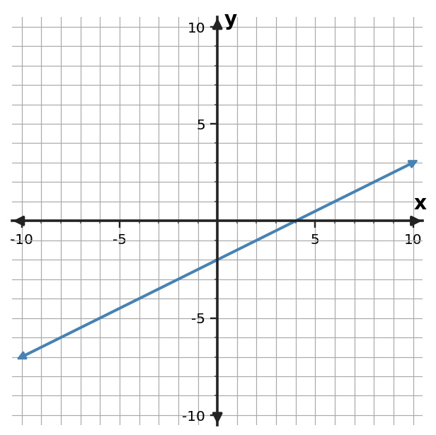

Algebra Practice 2.2 :::: Set 2
1. Graph $y=3x$. Mark the $y$-intercept and at least one additional point that shows the slope.
2. Graph $y=x-4$. Mark the $y$-intercept and at least one additional point that shows the slope.
3. Graph $y=-3x-1$. Mark the $y$-intercept and at least one additional point that shows the slope.
4. Use the graph to identify the $y$-intercept and describe whether the function is increasing or decreasing.

5. Use the graph to identify the $y$-intercept and describe whether the function is increasing or decreasing.

6. Use the graph to identify the $y$-intercept and describe whether the function is increasing or decreasing.

7. Plot the ordered pairs from the table and draw the linear function through them. Then state its slope and $y$-intercept.
| $x$ | $y$ |
|---|---|
| $-2$ | $9$ |
| $0$ | $5$ |
| $2$ | $1$ |
| $4$ | $-3$ |
8. Plot the ordered pairs from the table and draw the linear function through them. Then state its slope and $y$-intercept.
| $x$ | $y$ |
|---|---|
| $-2$ | $-4$ |
| $0$ | $-2$ |
| $2$ | $0$ |
| $4$ | $2$ |
9. Plot the ordered pairs from the table and draw the linear function through them. Then state its slope and $y$-intercept.
| $x$ | $y$ |
|---|---|
| $-2$ | $6$ |
| $0$ | $4$ |
| $2$ | $2$ |
| $4$ | $0$ |
10. A tank begins with 90 liters and drains 6 liters each minute. Sketch a graph with minutes on the horizontal axis and liters remaining on the vertical axis. Identify what the intercept means.
11. A student has 50 dollars saved and adds 12 dollars each week. Sketch a graph with weeks on the horizontal axis and savings on the vertical axis. Identify what the intercept means.
12. A tank starts with 84 liters and drains 7 liters each minute. Sketch a graph with minutes on the horizontal axis and liters remaining on the vertical axis. Identify what the intercept means.
13. Read the trip graph to estimate the distance at 5 hours. The requested time is inside the displayed 0-to-8-hour window.

14. Read the trip graph to estimate the distance at 7 hours. The requested time is inside the displayed 0-to-8-hour window.
15. Read the trip graph to estimate the distance at 1.5 hours. The requested time is inside the displayed 0-to-8-hour window.
16. The equation is $y=-2x+3$. A student plots $(0,-2)$ as the intercept. Identify the error and correct it.
17. On a graph, each horizontal grid step is 2 units and each vertical grid step is 5 units. A student moves right 1 square and up 1 square and calls the slope 1. Identify the error and correct it.
18. A student graphs $y=\frac12x-4$ by moving right 1 and up 2 from $(0,-4)$. Identify the error and correct it.
19. For $y=3x$, create a three-row input-output table for $x=0,1,2$.
20. For $y=2x+1$, create a three-row input-output table for $x=0,1,2$.
21. For $y=-x+4$, create a three-row input-output table for $x=0,1,2$.
22. Plot the point $(5,-1)$ on a coordinate plane and identify its quadrant.
23. Plot the point $(2,5)$ on a coordinate plane and identify its quadrant.
24. Plot the point $(-3,4)$ on a coordinate plane and identify its quadrant.